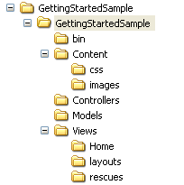
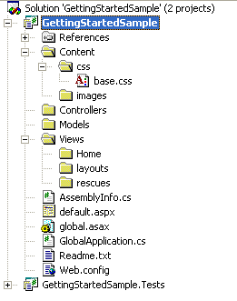
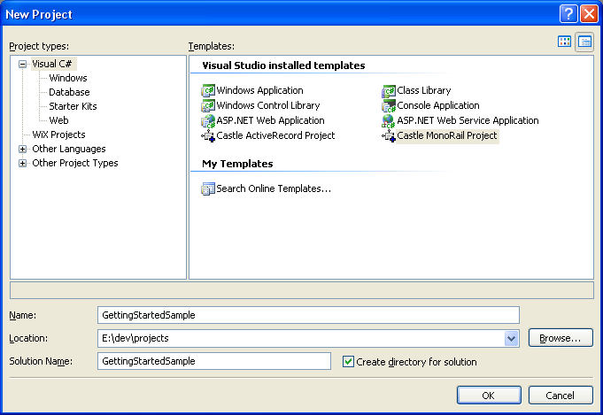
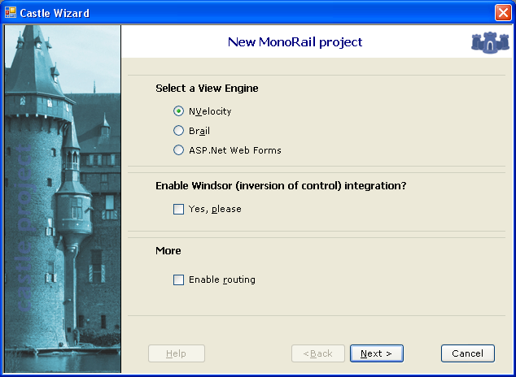

Table of contents
- 1 Using the MonoRail project wizard
- 2 Creating the project manually on Visual Studio
Creating the project skeleton
We encourage you to use the following project structure, as a convention:
| Folders:  | Solution:  |
The following sections show you how to create this structure manually or by using the MonoRail project wizard.
Using the MonoRail project wizard
If you have installed Castle Project using the MSI installer you are likely to have the Visual Studio Integration installed as well. If so, create a new MonoRail project using the Wizard.
Visual Studio 2005 users must download and install the Web Project support for Visual Studio, otherwise the wizard will not work.
Open Visual Studio and go to New\Project...
With Visual Studio.Net 2005:
Enter GettingStartedSample as the project name
The Wizard starts, select NVelocity View Engine and click Next

Check the option to create a test project and click Finish. The Wizard will create the solution and the projects and configure everything for you. This might take a few seconds.
At this point you should have a project ready to run.
Proceed with Your first controller and view.
Creating the project manually on Visual Studio
If you haven't installed the VS integration or don't want to use the project wizard, you can create the project structure manually.
Create an ASP.Net project on Visual Studio (or a Class Library if the ASP.Net Project is not available on your Visual Studio installation).
Add references to the following assemblies:
- Castle.MonoRail.Framework.dll: The MonoRail framework
- Castle.MonoRail.Framework.Views.NVelocity.dll: The view engine we are going to use
- Castle.Components.Validator.dll: Our lightweight validation infrastructure
- Castle.Components.Binder.dll: The binder implementation
- Castle.Components.Common.EmailSender.dll: The email service contracts
- Castle.Components.Common.EmailSender.SmtpEmailSender.dll: The email service implementation
- Castle.Core.dll: Core functionalities shared by projects
- NVelocity.dll: The template engine
Create the following folders on the project. Again, this is just a convention we encourage you to follow. You may come up with a more suitable convention for your projects after you get used to the framework.
Finally configure the web.config file. You must register a handler, a http module and the MonoRail configuration section:
Add the MonoRail configuration section:
<configuration> <configSections> <section name="monorail" type="Castle.MonoRail.Framework.Configuration.MonoRailSectionHandler, Castle.MonoRail.Framework" /> </configSections> <monorail> <controllers> <assembly>GettingStartedSample</assembly> </controllers> <viewEngines viewPathRoot="Views"> <add type="Castle.MonoRail.Framework.Views.NVelocity.NVelocityViewEngine, Castle.MonoRail.Framework.Views.NVelocity" /> </viewEngines> </monorail> ...
To use an extension like castle or rails, register the handler:
... <system.web> <httpHandlers> <add verb="*" path="*.castle" type="Castle.MonoRail.Framework.MonoRailHttpHandlerFactory, Castle.MonoRail.Framework" /> </httpHandlers> </system.web> </configuration>Finally register the http module:
... <system.web> <httpHandlers> <add verb="*" path="*.castle" type="Castle.MonoRail.Framework.MonoRailHttpHandlerFactory, Castle.MonoRail.Framework" /> </httpHandlers> <httpModules> <add name="monorail" type="Castle.MonoRail.Framework.EngineContextModule, Castle.MonoRail.Framework" /> </httpModules> </system.web> </configuration>
Proceed with Your first controller and view.
Generated by Castle Anakia.
Sponsored by  Castle Stronghold.
Castle Stronghold.